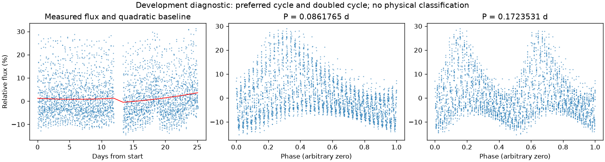
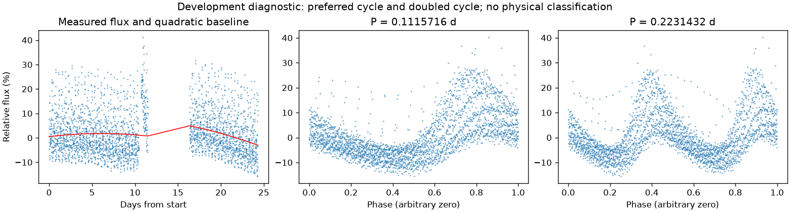

存在来源疑点，保留人工复核
亮度重复周期约 0.08617341 天。仍保留完整绕转周期的歧义。
第二版周期：0.08617654552706738 天；状态：preferred_lightcurve_cycle。

左图红线是缓慢基线；右面两图去除该基线。若未通过周期要求，两图只展示得分最高的竞争解释。
| 竞争周期（天） | 交替周期预测改善 | 两组各自改善 | 通过初筛 |
|---|---|---|---|
| 0.0861765 | 64.9% | 65.5% / 64.3% | 是 |
| 0.2231501 | 56.1% | 55.3% / 56.9% | 是 |
| 0.1116245 | 55.8% | 55.9% / 55.7% | 是 |
| 0.1110809 | 55.6% | 55.7% / 55.5% | 是 |
| 0.2221670 | 43.6% | 43.3% / 43.9% | 是 |
| 0.1724068 | 26.1% | 26.1% / 26.2% | 是 |
| 0.0554972 | -6.0% | -5.8% / -6.2% | 否 |
| 0.0558127 | -195.5% | -382.4% / -114.6% | 否 |
“预测改善”衡量用一组周期的形状预测另一组，比只有缓慢基线好多少；负数表示更差。搜索和预测共用了资料，因此这不是可信概率，也不是独立验证。
辅助数据检查：背景 SAP_BKG、指向修正 POS_CORR、亮斑中心 MOM_CENTR，或明确提供的仪器通道。
相关性只提示需要检查来源。恒星自身变暗也可能导致亮斑中心移动，不能据此断定是仪器。
第二版周期：0.1115716218628009 天；状态：preferred_lightcurve_cycle。

左图红线是缓慢基线；右面两图去除该基线。若未通过周期要求，两图只展示得分最高的竞争解释。
| 竞争周期（天） | 交替周期预测改善 | 两组各自改善 | 通过初筛 |
|---|---|---|---|
| 0.1115716 | 51.7% | 51.4% / 52.0% | 是 |
| 0.2231305 | 50.8% | 49.0% / 52.8% | 是 |
| 0.0861703 | 49.6% | 50.5% / 48.7% | 是 |
| 0.1724025 | 23.1% | 24.4% / 21.7% | 是 |
| 0.1121645 | 23.0% | 22.7% / 23.3% | 是 |
| 0.2249509 | 21.5% | 20.5% / 22.5% | 是 |
| 0.0561377 | 8.4% | 9.2% / 7.6% | 否 |
| 0.0558102 | -175.0% | -317.6% / -102.9% | 否 |
“预测改善”衡量用一组周期的形状预测另一组，比只有缓慢基线好多少；负数表示更差。搜索和预测共用了资料，因此这不是可信概率，也不是独立验证。
辅助数据检查：背景 SAP_BKG、指向修正 POS_CORR、亮斑中心 MOM_CENTR，或明确提供的仪器通道。
相关性只提示需要检查来源。恒星自身变暗也可能导致亮斑中心移动，不能据此断定是仪器。